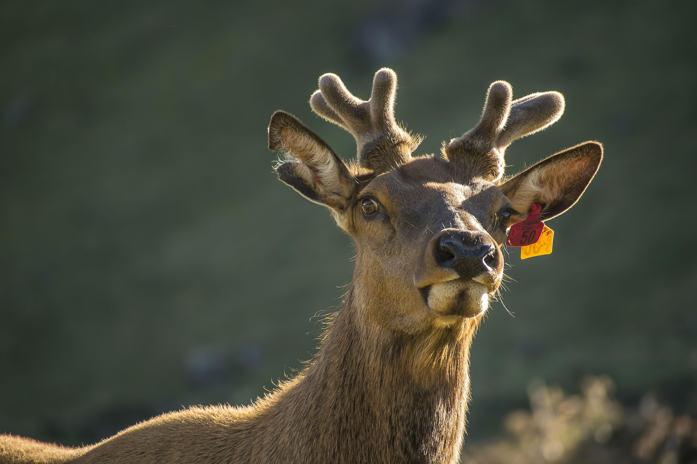

<html>
<head>
    <title>Menú Desplegable</title>
    <style>
          
    body { font-family: Arial, sans-serif; }
    
    .menu { margin: 0; padding: 0; list-style: none; }
    .menu li { float: left; position: relative; width: 150px; background-color: #333; }
    .menu li a { display: block; padding: 15px; color: white; text-decoration: none; text-align: center; }
    .menu li a:hover { background-color: #555; }

    .submenu { display: none; position: absolute; top: 100%; left: 0; margin: 0; padding: 0; list-style: none; }
    .submenu li { background-color: #444; width: 100%; }
    
    .menu li:hover > .submenu { display: block; }
 
    </style>
</head>
</html>
<body>

    <ul class="menu">
        <li><a href="#">Peces</a>
            <ul class="submenu">
                <li><a href="https://www.fishipedia.es/pez/betta-splendens">Pez Betta</a></li>
                <li><a href="https://www.fishipedia.es/pez/holacanthus-ciliaris">ángel reina</a></li>
                <li><a href="https://www.fishipedia.es/pez/hyphessobrycon-eques">Tetra serpae</a></li>
                <li><a href="https://www.tomscatch.com/es/especies-de-peces/marlin-blanco-11">Marlin Blanco</a></li>
                <li><a href="https://www.fishipedia.es/pez/hyphessobrycon-erythrostigma">Megalamphodus</a></li>
            </ul>
         </li>
        <li>
            <a href="#">Mamiferos</a>
            <ul class="submenu">
                <li><a href="gorila.html">Gorila</a></li>
                <li><a href="lemur.html">Lemur</a></li>
                <li><a href="caballo.html">Caballo</a></li>
                <li><a href="armadillo.html">Armadillo</a></li>
                <li><a href="reno.html">Reno</a></li>
            </ul>
        </li>
        <li><a href="#">Anfibios</a>
            <ul class="submenu">
                <li><a href="anfi2.html">Anfibios</a></li>
            </ul>
        </li>
        <li><a href="#">Aves</a>
            <ul class="submenu">
                <li><a href="https://www.nationalgeographicla.com/animales/loros">Loro</a></li>
                <li><a href="https://www.faunia.es/planea-tu-visita/animales/tucan-toco">Tucan Toco</a></li>
                <li><a href="https://deanimalia.com/selvaaguilafilipina.html">Águila Monera</a></li>
                <li><a href="https://aveschile.cl/picaflor-2/">Colibrí de Arica</a></li>
                <li><a href="https://laberintoenextincion.blogspot.com/2009/10/maca-tobiano.html">Macá Tobiano</a></li>
            </ul>
         </li>
         <li><a href="#">Reptiles</a>
        <ul class="submenu">
                <li><a href="coco.html">Cocodrilo De Agua Salada</a></li>
                <li><a href="torta.html">Tortuga gigante de galapagos</a></li>
                <li><a href="komodo.html">Dragon De Komodo</a></li>
                <li><a href="cama.html">Camaleon</a></li>
                <li><a href="ser.html">Serpiente De Cascabel</a></li>
            </ul>
         </li>
         <li><a href="index.html">Menu Principal</a>
         </li>
    </ul>

</body>
</html>

<html>
<head>
<title>Reno</title>
</head>
<body background="tundra.jpg" widht0"100%" height="100%" text="white">
<center><h2><marquee bgcolor="grey" width="75%">EL RENO</marquee></h2></center>
<center><h3><font face="calibri" color="red">(Rangifer tarandus)</font></h3></center>
<center></center>

<center><h3>El reno vive en regiones muy frías del hemisferio norte, especialmente en la tundra y los bosques boreales. Se encuentra en lugares como Canada, Alaska, Norway y Russia.
Estas zonas tienen inviernos largos y fríos, con mucha nieve y poca vegetación.

Los renos viven en manadas grandes y realizan migraciones largas cada año para buscar alimento y mejores condiciones climáticas. Son herbívoros, y su dieta incluye líquenes, musgo, hierbas y hojas. Durante el invierno usan sus pezuñas para rascar la nieve y encontrar comida.</h3></center>


<center><h2>Caracteristicas</h2></center>
<ol type="1" align="left">
<li>A diferencia de otros ciervos, ambos sexos tienen astas.</li></center>
<li>Su pelo tiene aire en su interior, lo que ayuda a conservar el calor.</li>
<li>Son anchas y fuertes para caminar sobre nieve, hielo o terreno blando.</li>
<li>Algunas manadas recorren cientos o miles de kilómetros cada año.</li>
<li>Su sistema nasal calienta el aire antes de que llegue a los pulmones.</li>
</ol>
</body>
</html>